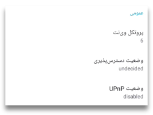
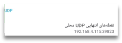

فایده تبدیل شدن به پل در سنو چیست؟
یک شبکه همتابههمتا از تمام گرههایی که به آن متصلاند ساخته میشود (بله، از جمله خود شما!). هر چه گرهها بیشتر باشند، شبکه قدرتمندتر و انعطافپذیرتر خواهد شد.
اگر مرورگر سنو را در کشوری استفاده میکنید که اینترنت را سانسور نمیکند (یا دست کم نه به شدت برخی کشورها)، میتوانید با تبدیل شدن به یک گره پل به سایر کاربران سنو کمک کنید. در این صورت شما شروع به مسیردهی ترافیک میان کاربرانی در کشورهای با سانسور شدید و تزریقکنندههای سنو (injectors) خواهید کرد.
شما نمیتوانید ترافیک آنها را ببینید (این ترافیک از طریق یک تونل رمزگذاریشده ارسال میشود) و هیچ بخشی از این ترافیک نیز روی دستگاه شما باقی نخواهد ماند.
توجه: پیکربندی توضیحدادهشده در این بخش ممکن است به دستگاه شما کمک کند تا محتوا را بهطور مؤثر برای دیگران در کَش توزیعشده بذرگذاری کند. بنابراین هنگام استفاده از سنو در یک کشور سانسورکننده، لطفا در نظر داشته باشید که آن را نیز اعمال کنید (اما خطرات ارائهی چنین محتوایی به دیگران را هم در نظر داشته باشید).
چطور تبدیل به یک پل سنو بشویم؟
همان طور که در این بخش آمده است، برنامه سنو قابلیتی فراهم میکند که اگر پیکربندی شبکه شما اجازه دهد، بتوانید بهسادگی تبدیل به پل سنو شوید.
اگر دسترسپذیری و وضعیت UPnP خود را بررسی کردهاید و نتیجه به این شکل است

لازم است روتر خود را یا با فعالسازی UPnP یا با تنظیم انتقال درگاه پیکربندی کنید. در بخشهای بعدی گامهای انجام این کار را توضیح میدهیم.
فعال کردن UPnP روی مودم وایفای
UPnP سادهترین روش برای دسترسپذیر کردن مرورگر سنو (یا کلاینت رایانهای) شما برای شبکه سنو است.
توجه: فعالسازی UPnP روی روتر وایفای ممکن است دستگاههای شبکه شما را در معرض دخالتهای خارجی قرار دهد. لطفا از خطرات آگاه باشید و همچنین روشهای جایگزین توضیح دادهشده در ادامه را هم در نظر بگیرید.
اولین کاری که باید انجام دهید ورود به رابط وب روترتان است. برای دانستن نحوه انجام این کار، لطفا به دفترچه راهنمای روتر مراجعه کنید که در آن نام کاربری و گذرواژه لازم برای ورود ذکر شده است.
پس از آن، گامهای اجرایی مشابهاند، اما ممکن است در همه مدلهای روتر کاملا یکسان نباشند.
در اینجا میتوانید مقاله خوبی درباره دستورالعملهای گامبهگام برای فعالسازی UPnP روی روترهای مختلف بخوانید.
لطفا دستورالعملهای مربوط به نوع روتر خود را پیدا کنید و گامهای لازم را انجام دهید.
با این حال، اگر ترجیح میدهید میتوانید بهجای UPnP، انتقال درگاه را تنظیم کنید.
از انتقال درگاه بهعنوان جایگزینی برای UPnP استفاده کنید
اولین گام همانند قبل است: وارد رابط وب روتر شوید.
سپس لطفا گزینه انتقال درگاه را پیدا کنید.
برای دیدن این که باید اتصالها را به کدام آدرس IP و درگاه مربوطه هدایت کنید، صفحه تنظیمات سنو را باز کرده و از قسمت جزئیات شبکه، بخش نقطههای انتهایی UDP محلی را بررسی کنید.

انتقال درگاه باید برای پروتکل UDP باشد (نه TCP).
سنو در اولین اجرا یک درگاه تصادفی انتخاب میکند و در اجراهای بعدی همان را نگه میدارد، اما آدرس IP محلی دستگاه شما در شبکه ممکن است هر از گاهی تغییر کند. بنابراین باید هر چند وقت یکبار صفحه تنظیمات سنو را بررسی کنید تا مطمئن شوید دستگاه شما برای شبکه سنو قابل دسترس است.
دستگاه شما قابل دسترس است اگر
وضعیت دسترسی: احتمالا در دسترس یا در دسترس
وضعیت UPnP: فعال
نکته فنی: همچنین میتوانید مطمئن شوید که روتر همیشه همان آدرس IP را به دستگاه شما اختصاص دهد (برای نمونه از طریق یک اجاره DHCP ثابت برای آدرس MAC دستگاه).
اگر رایانهای با اتصال خوب دارید که بیشتر اوقات روشن میماند و مایلید آن را بهعنوان یک پل سنو راهاندازی کنید، لطفا به خواندن ادامه دهید.
اجرای یک پل روی یک کامپیوتر
اگر رایانه شما از کانتینرهای داکر پشتیبانی میکند، میتوانید یک کلاینت از پیش
پیکربندیشده سنو را روی آن اجرا کنید تا بهعنوان یک پل عمل کند. اگر داکر هنوز
نصب نشده است، لطفا دستورالعملهای نصب Docker Engine را برای پلتفرم خود دنبال
کنید. برای توزیعهای مبتنی بر دبیان مانند اوبونتو یا لینوکس مینت، کافی است این
دستور را اجرا کنید: sudo apt install docker.io
برای راهاندازی یک محیط کلاینت سنو فقط کافی است دستور زیر را روی یک ترمینال اجرا کنید (شاید پیچیده و ترسناک به نظر برسد ولی میتوانید آن را همان طور که هست کپی کرده و در خط فرمان قرار دهید):
sudo docker run --name ceno-client \
-dv Ceno:/var/opt/ouinet --network host \
--restart unless-stopped equalitie/Ceno-client
اگر کامپیوترتان براساس سیستم GNU/Linux کار نمیکند، این فرمان را باید کمی تغییر دهید:
sudo docker run --name ceno-client \
-dv ceno:/var/opt/ouinet \
-p 127.0.0.1:8077-8078:8077-8078 -p 28729:28729/udp \
--restart unless-stopped equalitie/ceno-client
این دستور یک کانتینر با نام ceno-client را راهاندازی میکند که در هر بار بوت اجرا خواهد شد، مگر این که صراحتا به آن فرمان توقف بدهید.
لطفا برای اطلاعات بیشتر درباره نحوه کار با کانتینر، به مستندات کلاینت داکر سنو مراجعه کنید.